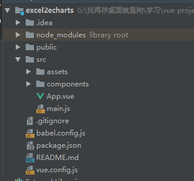

实习期间做得第一个小项目，也算是第一个自己从头到尾独立完成的项目吧，写个博客记录一下，也方便以后的参考。
使用的vue.cli搭建的基础框架，然后前端界面大部分使用了element，技术核心的库一个是echarts另一个是js-xlsx，大概就这些。
项目的github地址。
运行方式
1 | git clone https://github.com/PYHerman/excel2echarts.git |
由于没挂服务器，所以暂不支持在线使用，另外由于项目中的数据涉及到公司的业务信息，就不提供具体数据模板了。
项目结构

主要内容都在src文件夹下，其他都是脚手架生产的文件和配置文件等
src/App.vue 程序的整体页面布局
src/main.js 程序的全局调用的库以及页面路由
src/assets 储存静态资源，如图片，参考excel文件等
src/components 储存程序的各个vue组件 其中map、line和bar分别对应了地图，线柱图和饼图。upload组件是直接拿的vue-element-admin里的上传excel直接改的，我把这个组件分别嵌入了三个图表组件中，以实现不借助后端同页面前端数据传输的效果
内部技术
主要思想就是通过xlsx库读取上传的excel文件，提取出内部的表格数据，然后储存成json格式，通过vue的绑定监听上传成功的回调函数，再调用echarts的setOption更新图表
这项目当时师傅主要是想让我熟悉下vue项目的构建，也没啥很难的东西，而且我后面还想继续优化这项目使得读取文件什么的能够更加智能方便吧，现在数据处理这块还是写死的，限定了excel里的表头格式，详情请见项目页面的向导页，
所以先挖个坑，以后有机会就填